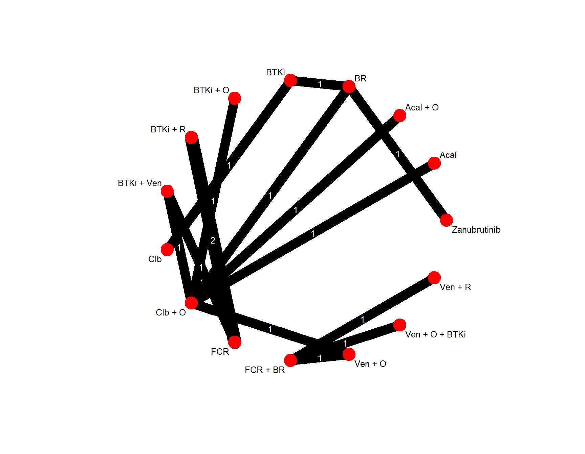

Code
source("R/nma_functions.R")
source("R/node_merging.R")
dat <- load_pairwise_data()Node merging is implemented by replacing selected treatment components inside labels such as I + R or Clb + O, then pooling duplicate comparisons within the same study using inverse-variance weights.
The example below merges the components I and Ibr into a common node named BTKi.
| study | treat1 | treat2 | logHR | selogHR |
|---|---|---|---|---|
| study 1 | BR | BTKi | -1.021 | 0.181 |
| study 10 | Acal | Clb + O | 1.427 | 0.161 |
| study 11 | BR | Zanubrutinib | -1.238 | 0.164 |
| study 12 | FCR + BR | Ven + O | -0.755 | 0.193 |
| study 13 | FCR + BR | Ven + O + BTKi | -1.204 | 0.231 |
| study 14 | FCR + BR | Ven + R | -0.357 | 0.082 |
| study 15 | BR | Clb + O | 0.600 | 0.200 |
| study 2 | BTKi + R | FCR | 0.994 | 0.162 |
| study 3 | BTKi + R | FCR | 0.820 | 0.160 |
| study 4 | BTKi + Ven | FCR | 1.139 | 0.238 |
| study 5 | BTKi + Ven | Clb + O | 1.310 | 0.195 |
| study 6 | Clb + O | Ven + O | -1.171 | 0.179 |
| study 7 | BTKi + O | Clb + O | 1.386 | 0.227 |
| study 8 | BTKi | Clb | 1.872 | 0.181 |
| study 9 | Acal + O | Clb + O | 1.967 | 0.177 |

Original data:
treat1 treat2 TE seTE
study 1 BR BTKi -1.0210 0.1810
study 10 Acal Clb + O 1.4270 0.1610
study 11 BR Zanubrutinib -1.2380 0.1640
study 12 FCR + BR Ven + O -0.7550 0.1930
study 13 FCR + BR Ven + O + BTKi -1.2040 0.2310
study 14 FCR + BR Ven + R -0.3570 0.0820
study 15 BR Clb + O 0.6000 0.2000
study 2 BTKi + R FCR 0.9940 0.1620
study 3 BTKi + R FCR 0.8200 0.1600
study 4 BTKi + Ven FCR 1.1390 0.2380
study 5 BTKi + Ven Clb + O 1.3100 0.1950
study 6 Clb + O Ven + O -1.1710 0.1790
study 7 BTKi + O Clb + O 1.3860 0.2270
study 8 BTKi Clb 1.8720 0.1810
study 9 Acal + O Clb + O 1.9670 0.1770
Number of treatment arms (by study):
narms
study 1 2
study 10 2
study 11 2
study 12 2
study 13 2
study 14 2
study 15 2
study 2 2
study 3 2
study 4 2
study 5 2
study 6 2
study 7 2
study 8 2
study 9 2
Results (common effects model):
treat1 treat2 HR 95%-CI Q leverage
study 1 BR BTKi 0.3602 [0.2526; 0.5136] 0.00 1.00
study 10 Acal Clb + O 4.1662 [3.0387; 5.7119] 0.00 1.00
study 11 BR Zanubrutinib 0.2900 [0.2103; 0.3999] 0.00 1.00
study 12 FCR + BR Ven + O 0.4700 [0.3220; 0.6861] 0.00 1.00
study 13 FCR + BR Ven + O + BTKi 0.3000 [0.1908; 0.4718] 0.00 1.00
study 14 FCR + BR Ven + R 0.6998 [0.5959; 0.8218] 0.00 1.00
study 15 BR Clb + O 1.8221 [1.2312; 2.6966] 0.00 1.00
study 2 BTKi + R FCR 2.4742 [1.9794; 3.0927] 0.30 0.49
study 3 BTKi + R FCR 2.4742 [1.9794; 3.0927] 0.29 0.51
study 4 BTKi + Ven FCR 3.1236 [1.9592; 4.9802] 0.00 1.00
study 5 BTKi + Ven Clb + O 3.7062 [2.5290; 5.4314] 0.00 1.00
study 6 Clb + O Ven + O 0.3101 [0.2183; 0.4404] 0.00 1.00
study 7 BTKi + O Clb + O 3.9988 [2.5628; 6.2396] 0.00 1.00
study 8 BTKi Clb 6.5013 [4.5597; 9.2697] 0.00 1.00
study 9 Acal + O Clb + O 7.1492 [5.0535; 10.1139] 0.00 1.00
Results (random effects model):
treat1 treat2 HR 95%-CI
study 1 BR BTKi 0.3602 [0.2526; 0.5136]
study 10 Acal Clb + O 4.1662 [3.0387; 5.7119]
study 11 BR Zanubrutinib 0.2900 [0.2103; 0.3999]
study 12 FCR + BR Ven + O 0.4700 [0.3220; 0.6861]
study 13 FCR + BR Ven + O + BTKi 0.3000 [0.1908; 0.4718]
study 14 FCR + BR Ven + R 0.6998 [0.5959; 0.8218]
study 15 BR Clb + O 1.8221 [1.2312; 2.6966]
study 2 BTKi + R FCR 2.4742 [1.9794; 3.0927]
study 3 BTKi + R FCR 2.4742 [1.9794; 3.0927]
study 4 BTKi + Ven FCR 3.1236 [1.9592; 4.9802]
study 5 BTKi + Ven Clb + O 3.7062 [2.5290; 5.4314]
study 6 Clb + O Ven + O 0.3101 [0.2183; 0.4404]
study 7 BTKi + O Clb + O 3.9988 [2.5628; 6.2396]
study 8 BTKi Clb 6.5013 [4.5597; 9.2697]
study 9 Acal + O Clb + O 7.1492 [5.0535; 10.1139]
Number of studies: k = 15
Number of pairwise comparisons: m = 15
Number of treatments: n = 15
Number of designs: d = 14
Common effects model
Treatment estimate (sm = 'HR', comparison: other treatments vs 'Acal'):
HR 95%-CI z p-value
Acal . . . .
Acal + O 1.7160 [1.0736; 2.7427] 2.26 0.0240
BR 0.4374 [0.2644; 0.7234] -3.22 0.0013
BTKi 1.2141 [0.6559; 2.2472] 0.62 0.5369
BTKi + O 0.9598 [0.5563; 1.6561] -0.15 0.8829
BTKi + R 0.7046 [0.3443; 1.4422] -0.96 0.3381
BTKi + Ven 0.8896 [0.5419; 1.4603] -0.46 0.6436
Clb 0.1867 [0.0918; 0.3801] -4.63 < 0.0001
Clb + O 0.2400 [0.1751; 0.3291] -8.86 < 0.0001
FCR 0.2848 [0.1442; 0.5625] -3.62 0.0003
FCR + BR 0.3639 [0.1987; 0.6662] -3.28 0.0011
Ven + O 0.7741 [0.4829; 1.2409] -1.06 0.2876
Ven + O + BTKi 1.2129 [0.5698; 2.5818] 0.50 0.6166
Ven + R 0.5200 [0.2781; 0.9722] -2.05 0.0405
Zanubrutinib 1.5083 [0.8302; 2.7404] 1.35 0.1773
Random effects model
Treatment estimate (sm = 'HR', comparison: other treatments vs 'Acal'):
HR 95%-CI z p-value
Acal . . . .
Acal + O 1.7160 [1.0736; 2.7427] 2.26 0.0240
BR 0.4374 [0.2644; 0.7234] -3.22 0.0013
BTKi 1.2141 [0.6559; 2.2472] 0.62 0.5369
BTKi + O 0.9598 [0.5563; 1.6561] -0.15 0.8829
BTKi + R 0.7046 [0.3443; 1.4422] -0.96 0.3381
BTKi + Ven 0.8896 [0.5419; 1.4603] -0.46 0.6436
Clb 0.1867 [0.0918; 0.3801] -4.63 < 0.0001
Clb + O 0.2400 [0.1751; 0.3291] -8.86 < 0.0001
FCR 0.2848 [0.1442; 0.5625] -3.62 0.0003
FCR + BR 0.3639 [0.1987; 0.6662] -3.28 0.0011
Ven + O 0.7741 [0.4829; 1.2409] -1.06 0.2876
Ven + O + BTKi 1.2129 [0.5698; 2.5818] 0.50 0.6166
Ven + R 0.5200 [0.2781; 0.9722] -2.05 0.0405
Zanubrutinib 1.5083 [0.8302; 2.7404] 1.35 0.1773
Quantifying heterogeneity / inconsistency:
tau^2 = 0; tau = 0; I^2 = 0%
Tests of heterogeneity (within designs) and inconsistency (between designs):
Q d.f. p-value
Total 0.58 1 0.4448
Within designs 0.58 1 0.4448
Between designs 0.00 0 --
Details of network meta-analysis methods:
- Frequentist graph-theoretical approach
- DerSimonian-Laird estimator for tau^2
- Calculation of I^2 based on Q---
title: "Node Merging"
---
```{r}
source("R/nma_functions.R")
source("R/node_merging.R")
dat <- load_pairwise_data()
```
Node merging is implemented by replacing selected treatment components inside labels such as `I + R` or `Clb + O`, then pooling duplicate comparisons within the same study using inverse-variance weights.
## Available components
```{r}
knitr::kable(data.frame(component = extract_components(dat)))
```
## Example scenario
The example below merges the components `I` and `Ibr` into a common node named `BTKi`.
```{r}
merged_dat <- merge_components(
dat,
components = c("I", "Ibr"),
new_name = "BTKi",
stop_on_self_loop = TRUE
)
knitr::kable(merged_dat)
```
## Re-run NMA after merging
```{r fig.height=7, fig.width=9}
nm_merged <- run_model(merged_dat, model_type = "simple", effect_model = "random")
netmeta::netgraph(
nm_merged,
number.of.studies = TRUE,
thickness = "number.of.studies",
multiarm = TRUE,
points = TRUE,
cex.points = 4,
cex = 0.8,
plastic = FALSE,
seq = sort(nm_merged$trts)
)
```
```{r}
summary(nm_merged, backtransf = TRUE)
```